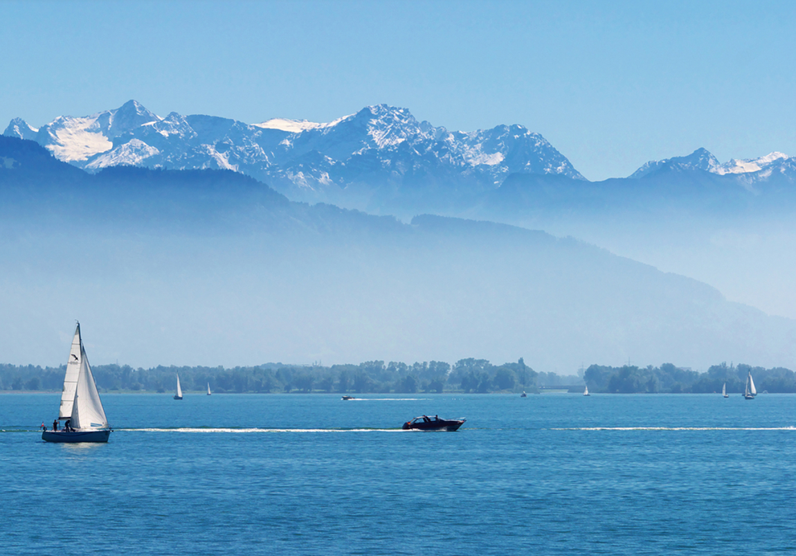

-
Seenachtfest

The Seenachtfest Konstanz is one of the largest and most popular summer festivals on Lake Constance. Live music, stage programmes, culinary offerings and a spectacular large-scale fireworks display over the lake shape the event, which attracts visitors from across the region and beyond. Over several days, the festival combines atmosphere, entertainment and maritime flair directly along the waterfront of the historic harbour city of Konstanz.
Website -
Meersburg Wine Festival
Since 1974 wine friends from near and far meet in September to savour Lake Constance wine and Meersburg’s bakery, butchery and fishery specialities on the Castle square. Here you will have the unique opportunity to taste the wine of various vineyards of the Lake Constance region and thus get an overview of local wine growing. Besides Meersburg vineyards, winegrowers from Hagnau, Konstanz and Bermatingen are represented at the wine show on three days, from Friday to Sunday. Delights reaching from the cheese platter to Lake Constance fish are served with the wine.
website -
40th Kulturufer Friedrichshafen
For the 40th time, the river promenade in Friedrichshafen will be transformed into a colorful festival mile full of music, theatre, cabaret and street art from July 31st to August 9th, 2026.
website